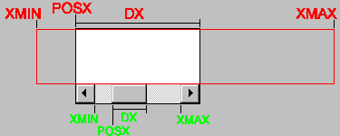

Associates a horizontal and/or vertical scrollbar to the canvas.
"VERTICAL", "HORIZONTAL", "YES" (both) or "NO" (none).
Default: "NO"
The scrollbar allows you to create a virtual space associated to the canvas. In the image below, such space is marked in red, as well as the attributes that affect the composition of this space. In green you can see how these attributes are reflected on the scrollbar.
Hence you can clearly deduce that POSX is limited to XMIN and XMAX-DX, or XMIN<=POSX<=XMAX-DX.
When the virtual space has the same size as the canvas, DX equals XMAX-XMIN, and at this moment the scrollbar could be hidden, as it is not useful (this behavior occurs only for the Win32 driver).
